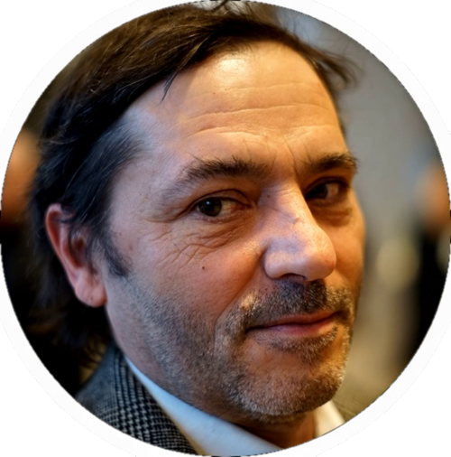

Mein Name ist Dominik, was so viel heißt wie "der dem römisch-katholischen Gott gehörende". Meine Mutter hatte mich auf diesen goyschen Namen taufen lassen, kurz nach meiner Beschneidung. Sie wollte um jeden Preis verhindern, dass jemand auf die absurde Idee kämme, ich könnte ein Jude sein.
Meine Mutter wurde 1938 in die florierende jüdische Gemeinde von Krakau hineingeboren. Ein Jahr später, als sie ihre ersten Schritte tat, waren die Straßen schon von sterbenden oder bereits toten Juden gesäumt.
Ich wusste nichts davon, ich hatte eine glückliche Kindheit. Da meine Mutter dazu nicht wirklich in der Lage war, wuchs ich in der Obhut meiner Großmutter Teofila Ligocka auf. Oma war eine Seele von einem Menschen. Nie habe ich von ihr ein böses Wort gehört. Nichtmal im Bezug auf die Deutschen. Sie war vergewaltigt worden, hatte ihren gesamten Schmuck für ein Versteck getauscht und war dennoch veraten worden. Dann hatte sie meine Mutter in einem Koffer aus dem Ghetto geschmuggelt. Keinen Moment zu früh, denn nur wenig später regnete menschliche Asche auf Krakau nieder. Nach dem Krieg nahm sie den halb verhungerten Roman Polanski bei sich auf, als er aus seinem Versteck nach Krakau zurückkehrte. Und dann eben mich.
Auch mit ihrem Mann, den ich Onkel nennen musste damit die Deutschen ihnen nicht die Rente kürzten, verstand ich mich gut. Viele Sonntage verbrachte ich in seinen Armen auf der Couch, wo er mir die neuesten James-Bond-Filme erzählte, während ich versonnen auf die Nummer auf seinen Unterarm starrte. Er hieß Oleg. Sein Sohn Ryszard Horowitz war eins der jüngsten Kinder auf Schindlers Liste.
Und dann hatte ich auch noch eine Menge Tanten. Das waren natürlich keine echten Tanten und auch nicht wirklich eine Menge, vielmehr vier bis fünf Überlebende, mit denen sich meine Oma angefreundet hatten. Gelegentlich trafen sie sich zu Kaffee und Kuchen und plauderten, tauschten Erinnerungen aus, während ich spielte. Ich kann mich an ihre Gespräche nicht mehr erinnern, deutlich aber an ein Fragment. Tante Jadwiga sagte einmal: "Aber ich hatte keine Angst. Ich hatte ja noch die Rasierklinge."
Zwischendurch hatte ich auch eine Zeitlang bei meinen Eltern in München gewohnt. Mit meinem Vater verstand ich mich immer gut. Mit meiner Mutter war das Zusammenleben schwierig, denn sie war medikamentensüchtig und das war auch nur das geringste ihrer Probleme. Gott sei Dank wohnten in der Nähe meine Tante Barbara Kwiatkowska und ihr Mann Karl-Heinz Böhm. So wurde ihr Haus in Baldham mein Refugium. Dennoch war ich froh, dann wieder bei Oma zu sein.
Anfang der 70er Jahre starb mein Onkel an den Folgen der KZ-Haft. As die Russen Ausschitz erreichten, hatte ihn ein Soldat eine gut gewürzte Fleischkonserve gegeben. Für jemanden der sich seine Plomben aus den Zähnen gerissen hatte um sie gegen einen Teller Suppe zu tauschen, war das zu viel. Nach vielen Jahren mit chronischen Problemen starb er schließlich am Darminfarkt.
Wenig später starb auch meine Oma, wohl an gebrochenen Herzen. Sie hatte aufgehört am Schabbat zu beten und als ich sie fragte, antwortete sie: "Ich bin böse auf Gott. Er hat zugelassen, dass die Deutschen mir auch meinen zweiten Mann nehmen. Selbst noch Jahre nach dem Krieg". Sie wurde ganze 54.
Das war also meine Kindheit. Wobei ich nicht genau sagen kann, wann sie endete.
Lange Zeit wartete ich darauf, eines Morgens aufzuwachen und ein erwachsener, arrivierter Mann zu sein, der kluge und gewichtige Dinge spricht. Weil das nicht eintrat, begann ich die anderen ernsthaften Männer zu betrachten und zuzuhören was die so kluges reden. Politiker oder Juristen etwa. Das half zumindest gegen meine Minderwertigkeitskomplexe.
Leider hörte ich danach nicht auf zu lesen. Zunächst ging ja alles gut, ich fand viel Amüsantes.
Doch einse Tages stieß ich auf ein paar unscheinbaren Sätze, die zwar vieles erklärten, aber bei mir aber eine tief-sitzende, wenn auch durchaus berechtigte Paranoia auslösten.